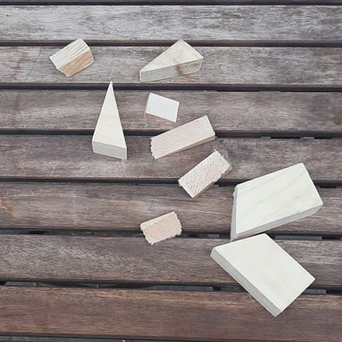

Boat Building
This page contains progress updates and pictures of my boat building.
In the summer of 2021 my friend Troy and I decided to build a boat and my other friend Ryan decided to assist us. We chose to build a Puddle Duck. Specifically, we are using these plans.
Most of our materials are sourced from Home Depot Canada and Canadian Tire. The specialty materials we are using were sourced from Noah's Marine Supply.
Here's me cutting some of the wood with my jigsaw!
We cut out lots of pieces from our plywood!

Lots of support pieces!

Some leftover pieces too!
